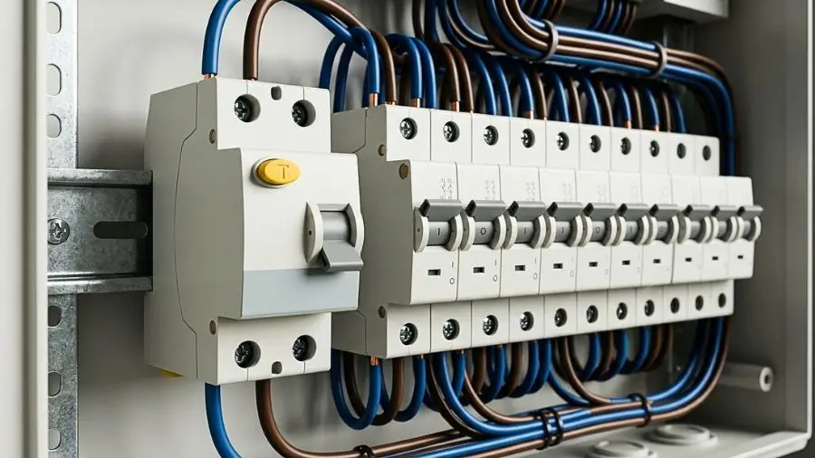

MCB vs. RCD & GFCI: Why Standard Circuit Breakers Will Never Save You from Electrocution

A standard 16A or 20A Miniature Circuit Breaker protects building wiring from melting—only a sensitive 30mA RCD or 5mA GFCI reacts fast enough to save human lives.
One of the most dangerous assumptions made by DIY homeowners and apprentice electricians is believing that because a circuit panel has brand-new 15A or 20A circuit breakers, anyone touching an exposed wire is protected from lethal shock. In reality, standard Miniature Circuit Breakers (MCBs) are designed to protect copper conductors from catching fire—not human beings from dying.
1. The Lethal Gap: Amperes vs. Milliamperes
Human cardiac physiology is extraordinarily sensitive to alternating current (50 Hz / 60 Hz). A mere 30 to 50 milliamperes (0.030 to 0.050 A) passing across the thoracic cavity can induce ventricular fibrillation within a fraction of a second, causing cardiac arrest:
- Human Body Contact: At 120V to 230V, average human skin impedance ranges from
1,000 Ωto2,000 Ω. Under Ohm's Law (I = V / R), touching a live phase conductor draws roughly60 mAto230 mAstraight into the ground. - The MCB Thermal-Magnetic Blind Spot: A standard 15A or 20A breaker requires sustained current well above 15A to heat its bimetallic strip, or a surge above 75A to trip its electromagnetic coil. To that breaker, a 150 mA human electrocution appears as nothing more than a small decorative lamp.
2. How RCDs and GFCIs Measure Vector Balance
Residual Current Devices (RCDs / RCCBs) and Ground Fault Circuit Interrupters (GFCIs) work on dynamic electromagnetic vector balance rather than gross amperage. Both the live (hot) and neutral conductors pass through a toroidal current transformer:
Under normal conditions, all outbound current returning through neutral produces opposing magnetic fluxes that cancel each other out (I_hot - I_neutral = 0). The microsecond any leakage current escapes (e.g. through a human body into earth), the toroid detects the imbalance and unlatches the internal relay mechanism in under 20 to 40 milliseconds.
3. Choosing the Right Protection Class
| Device Type | Trip Threshold | Primary Protection Role |
|---|---|---|
| GFCI (UL 943 Class A) | 4 mA - 6 mA | Direct human life safety in bathrooms, kitchens, outdoor outlets |
| RCD (IEC 61008 / 61009) | 30 mA | Global standard life protection for general household socket circuits |
| Industrial RCD | 100 mA - 300 mA | Building fire prevention caused by arcing tracking currents |
4. The RCBO All-in-One Solution
To eliminate panel clutter, modern distribution boards increasingly specify RCBOs (Residual Current Breaker with Overcurrent protection). An RCBO integrates thermal overload (Ib ≤ In ≤ Iz), short-circuit magnetic interruption, and 30 mA / 6 mA differential leakage detection into a single modular DIN-rail slot.
When engineering panel upgrades, calculating total branch ampacities, and sizing overcurrent breakers, verify all conductor parameters inside Wire Size & Voltage Drop Calc to keep both equipment and human occupants fully protected.
⚡ Live Interactive Mini-Calculator: Voltage Drop & Joule Heat
Ohm's Law EngineTest conductor resistance (R = ρ·L/A) and see heat wasted in the cable before installation:
Joule Heat Loss in Cable: 157.5 Watts
Wire Size & Voltage Drop Calc
Stop testing wire gauges one by one! Automatically calculates commercial AWG & metric mm² sizes, breaker trip ratings (Ib ≤ In ≤ Iz), 8 conductor metals (Copper, Aluminum, Pure Nickel, Nichrome), AC Mains, 12V/24V/48V Solar, 40% Conduit Fill, and 40 Offline Guides.
✓ Free on Android (Google Play) • ✓ Works 100% Offline • ✓ 0% Crashes
Frequently Asked Technical Question
Will a standard 15-amp or 20-amp circuit breaker trip if a person touches an exposed live wire?
No, it will almost certainly never trip. Human body resistance typically draws between 60 mA and 240 mA at 120V/230V. Because standard MCBs only trip at overcurrent levels (15 to 20 amperes or higher), the breaker perceives human current as a tiny 20-watt lightbulb, allowing fatal electrocution unless an RCD (30 mA) or GFCI (4 to 6 mA) is present.